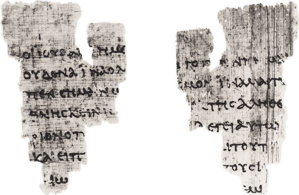

However we assess the purposes and genre of the NT Gospels, they are clearly accounts of the life, work, death, and resurrection of Jesus. As we have seen, each Evangelist introduces his Gospel and subject in a way particularly appropriate to that Gospel’s portrait of Jesus. Matthew introduces Jesus with a genealogy, tracing Jesus’ family line back through two key figures in Israel’s history, David and Abraham (Matt 1:1). After designating Jesus as “the Messiah, the Son of God” (Mark 1:1), Mark recounts the ministry of John the Baptist, who announced the coming of the one “mightier than I” and baptized him in the Jordan River in the Judean wilderness. And Luke promises his readers that he will write an account of all the things having to do with Jesus, beginning with the accounts of the birth of the forerunner of Jesus, John the Baptist, and of Jesus himself. These three Gospels anchor their narratives of Jesus’ life firmly in the events and circumstances surrounding the beginning of Jesus’ public ministry, his family, and his place in Israel’s history.
The Gospel of John is also an account of the life, work, death, and resurrection of Jesus. But it opens with neither a reference to Jesus’ genealogy nor an account of his birth. Rather, John opens with the words “in the beginning,” the exact phrase with which the book of Genesis opens in the Greek OT (LXX; en archē). As is well known, the verse in Genesis ends with the assertion, “God created the heavens and the earth” (Gen 1:1). A reader of John who was familiar with the LXX would hear echoes of the Genesis account of God’s creation of the world and would reasonably expect that John intended some connection to it. And such a reader would not be disappointed. John follows “in the beginning” with the declaration “was the Word.” To emphasize the point that the Word was in the beginning, John adds “the Word was with God” (1:1) and rephrases the affirmation in the next verse: “This Word was in the beginning with God” (1:2). When God created the world “in the beginning,” the Word already was. In fact, John continues, God created all things “through the Word” (1:3). This is John’s commentary on the creation account of Genesis 1. It is hard to imagine what more could be said to underscore the dignity and mystery of this Word than is said in these affirmations. And yet John does say more. He asserts that not only was this Word “in the beginning” with God, as the agent of the world’s creation, but that the Word “was God.” The Word participates in the very life and being of God.
A few verses later there is a second set of affirmations regarding the Word: “And the Word became flesh, and dwelled among us, full of grace and truth” (John 1:14). The Word who was in the beginning with God, the Word through whom the world was made, the Word who was God, “became flesh.” That Word took on the reality of existence as a human being who bore the name Jesus. With this affirmation, the reader is moved out of the primeval time of creation into the life of a particular human being and a concrete historical setting. That setting begins to be identified when a few verses later Jesus is called “the Messiah” (1:17), announced by a prophet named John (1:6, 15), and is compared to Moses, who gave the law (1:17). All these factors locate the Gospel within the world of first-century Judaism. Indeed, such a setting has already been adumbrated by the allusion to the opening words of Genesis, the Scriptures of the people of Israel.
These twin affirmations — that the Word was in the beginning with God and was God, and that the Word became flesh — express the identity of the one who is the subject of the Gospel. To be sure, the Gospel provides an account of Jesus’ ministry, death, and resurrection. This is an account of the life of a human being of flesh and blood. But to grasp the significance of Jesus and his ministry, one must see him with the stereoscopic vision provided by these two affirmations. On the one hand, as a real human being, he lived and worked in a specific time and place. That time and place is Israel in the first century. Thus one must grasp the identity of Jesus as the Messiah of Israel and understand how he relates to figures such as John the Baptist and Moses, the great prophet of Israel, and to the law given through Moses, which the Jewish people of Jesus’ day sought diligently to obey.
But, on the other hand, while understanding Jesus in the symbols and categories of Judaism is essential, that is not enough for a full comprehension of who he is. Jesus’ identity can only be grasped fully as the one who is the Word made flesh, a Word who “was in the beginning with God.” More than any other Gospel, John makes it clear that Jesus of Nazareth cannot be fully understood through the sort of account that a biography or chronicle of his life and work might offer. Rather, his story has to be read within the context of the cosmic drama of what God is doing through and in him. Readers who come to the Gospel expecting to find an account of the life, work, death, and resurrection of Jesus will find it. But they will also find that account shot through with the conviction that in Jesus the Word of God was made flesh. That one sentence, with its twin affirmations, serves as the lens through which Jesus’ significance may be discerned.
7.2. JESUS, CONFLICT, AND CONFESSION
Having spelled out Jesus’ identity, the Gospel shifts from explicit affirmations about him to a narrative which recounts words and deeds that manifest Jesus’ identity as the Messiah who came from God. But these affirmations do not go unchallenged. In fact, the Gospel contains numerous episodes of discourse and debate in which the subject is Jesus’ own identity. The Samaritan woman whom Jesus meets at a well reckons that he is a prophet, asks whether he is the Messiah, and invites her fellow townspeople to come meet Jesus, and they eventually profess Jesus to be “the Savior of the world” (ch. 4). After the feeding of the 5,000, Jesus talks at length about himself using the metaphor “bread of life.” This discourse eventually leads many of his followers to desert him, although Peter and the disciples reaffirm their commitment to him as the one who has “the words of life” (ch. 6). A bitter dispute with “some Jews who had believed in him” (8:31) leads to Jesus’ enigmatic assertion, “Before Abraham was, I am” (8:58).
In each of these episodes, the people whom Jesus encounters move either toward faith in him, recognizing and professing who he is, or away from faith in him, by misunderstanding and rejecting him and his claims. Although he is the Word of God incarnate, when he speaks many either do not understand or do not believe. Jesus’ person and teaching clearly divide his audiences. More often than not, Jesus himself forces the issue by his bold claims to speak God’s word on God’s behalf and by God’s authority. “My teaching is not mine but his who sent me” (7:16; 8:26; 12:49–50). Ultimately, the response to Jesus of each person in the Gospel is a response to the one who sent Jesus, to God. And belief and unbelief seem to be the only two possible options.
So strongly does the Gospel reject the possibility that anyone could remain on neutral ground with respect to Jesus and, ultimately, to God that it paints the contrast between the two potential responses to Jesus in the starkest possible terms. Faith in Jesus comes from “above,” from God; it leads to life, light, truth, love, joy, peace, and knowledge of God; it results in the gift of eternal life (3:16, 21). By contrast, unbelief leads to death, darkness, error, and evil; it leads to judgment and ultimately to condemnation (3:19–20); it brands one as belonging not to God and the realm that is above, but to the world, the realm that is “below,” and even to the devil (8:44–47).
In addition to Jesus’ teaching and debates, the Gospel also contains accounts of Jesus’ amazing deeds: he changes water to wine, feeds five thousand people, heals the sick, paralyzed, and blind, and raises the dead. Separately and together, these deeds reveal his identity as the one who brings life to the world, whether as abundant provision of food for the body or the spirit, healing, or restoration of life to the dead. But even the miracles of Jesus do not lead directly to belief. Those who see them sometimes fail to comprehend their significance (6:27–35), argue about the appropriateness of how and when Jesus has chosen to heal (5:16; 7:23; 9:16), or react by plotting to put him to death (11:47–53). While no one in the Gospel denies that Jesus does amazing deeds, less often do they come to grasp exactly that these deeds bear witness to him as one who has come from the very presence of God. In fact, witnesses to Jesus’ miracles frequently state exactly the opposite view. The Pharisees’ response to Jesus’ healing of the blind man, coupled with the Evangelist’s comment, summarizes it well: “Some of the Pharisees said, ‘This man is not from God, for he does not observe the sabbath.’ But others said, ‘How can a man who is a sinner perform such signs?’ And they were divided” (9:16).
Although the Gospel claims that Jesus makes God known (1:18), its episodes do not recount a series of triumphant and dazzling displays of divine glory, but rather the encounters of Jesus with a succession of different individuals who sometimes cannot see in Jesus anything more than a teacher whose brash claims belie his ordinary origins. “Is this not Jesus, the son of Joseph, whose mother and father we know?” (6:42). “How is it that this man has learning when he has never studied?” (7:15). “We know where this man comes from” (7:27). “We know that God has spoken to Moses, but as for this man, we do not know where he come from” (9:29). “It is not for a good work that we stone you but for blasphemy; because you, being a man, make yourself God” (10:33). What they will not or cannot accept is the assessment of Jesus given to the reader in the opening words of the Gospel. So much do Jesus’ contemporaries oppose him that they seek to put him to death. In condemning Jesus to death, they have shut their ears to the Word of God and closed their eyes to the glory of God.
Cast in those terms, the Gospel appears to narrate a grim story of revelation gone awry. But, as already stated, the response to Jesus is mixed, and although rejection and hostility frequently characterize the reaction to Jesus, there are also individuals who believe in and follow him. Jesus calls disciples, elicits faith from them (2:11) and from a man whose child he heals (4:48–54), brings a Samaritan woman to confess him as Messiah and a whole town to honor him as Savior of the world (ch. 4), leads a former beggar to worship him as Lord (ch. 9), and finally leads Thomas to acknowledge him as his Lord and God (20:28). The opposing responses of belief and unbelief illustrate graphically the words of the prologue: “He came to what was his own, and his own people did not accept him. But to all who received him, who believed in his name, he gave power to become children of God, who were born, not of blood or of the will of the flesh or of the will of man, but of God” (1:11–13). That is the underlying story embodied in each episode of the narrative as well as in the narrative as a whole. People either receive and believe in Jesus, or they reject him in unbelief. In his summary of the Gospel’s purpose, the Evangelist notes that what is true for the people in the Gospel is true for its readers as well: “Now Jesus did many other signs in the presence of his disciples that are not written in this book. But these have been written so that you may believe that Jesus is the Messiah, the Son of God, and that through believing you may have life in his name” (20:30–31).
The Gospel itself is divided into two main parts bracketed by a prologue (1:1–18) and a brief postscript (21:24–25). The first main part, 1:19–12:50, recounts some of the signs that Jesus did openly or in public, his controversies with Jewish leaders, and the various sermons and dialogues in which he lays out his claims for himself and his work. In this portion of the Gospel, often designated the “Book of Signs,” Jesus speaks of himself as the one who gives the gift of life from God, and performs signs that manifest his life-giving capacities. While Jesus does elicit positive responses, calling and making disciples, this part of the Gospel nevertheless closes with a summary that underscores the negative response to him (12:37–40), renews the invitation to believe in him (12:44–48), and repeats the claim that Jesus speaks the words of God (12:50).
The first part of the Gospel can be further divided into two major parts. Chapters 1–4 contain scenes in which Jesus makes disciples and is acknowledged by them and others with a wide variety of epithets, including “King of Israel” (1:49), “Son of God” (1:34, 49), “Messiah” (1:41), and “Savior of the world” (4:42). While some individuals, such as Nicodemus, fail to understand Jesus and grasp his message, the pervasive tone of these chapters is positive. Failure to comprehend Jesus comes closer to benign misunderstanding than overt hostility. To be sure, already in these chapters Jesus’ death is foreshadowed (2:17–22), but the hour of his death lies still far in the future.
But in chapters 5–12, the second part of the “Book of Signs,” the tone changes markedly. Sharp and bitter disputes between Jesus and his audience arise as Jesus’ claims become more difficult for his audience to believe. Benign misunderstanding gives way to dangerous misperceptions of Jesus’ purposes (6:14–15), doubt and grumbling (6:41–42, 52), debates about his identity (7:26–27, 40–44, 47–52; 9:16–17; 10:22–33), hostile disputes with Jewish authorities (8:52–58), desertion by former disciples (6:66), and, ultimately, the intention to seek Jesus’ death (5:18; 7:1, 19, 25; 8:40; 11:47–53). While these chapters narrate a rising tide of negative reaction and hostility, that tide is matched by confession of Jesus as well. The blind man who had been healed acknowledges Jesus to be a prophet (9:16) and the Son of man with the confession, “Lord, I believe” (9:36–38). Martha, the sister of Lazarus, confesses Jesus as “the Christ, the Son of God” (11:27). Both opposition and acknowledgment crest at the raising of Lazarus from the dead.
The rising crescendo of hostility leads directly to that part of the Gospel which recounts Jesus’ death. The second half of the Gospel, the so-called “Book of the Passion” or “Book of Glory” (13:1–21:23), turns to the events of Jesus’ final days. This part can be subdivided into three parts which move back and forth between Jesus’ encounters with his disciples and with the authorities. Chapters 13–17 recount Jesus’ last meal with his disciples, his lengthy instructions to them about what they are to expect and how they are to conduct themselves in his absence, and his prayer on their behalf. Chapters 18–19 tell of Jesus’ arrest and subsequent trial before Jewish and Roman authorities, and his crucifixion. Only two disciples, Peter and the anonymous “disciple whom Jesus had loved,” play a significant role in these chapters. Peter’s denial of Jesus contrasts with the persistent faithfulness of the other disciple, who alone is found at the foot of the cross as Jesus dies. Finally, chapters 20–21:23 focus again on Jesus and the disciples. Even as they had once recognized Jesus and followed him, so now again the challenge comes to recognize and follow the risen Lord.
These two major parts of the Gospel are bracketed by a prologue (1:1–18), which introduces the main actors in the Gospel as well as foreshadowing the action that unfolds in it, and a postscript (21:24–25), a brief editorial comment noting that the Gospel contains only a few of the many stories that could be told about Jesus. This remark reminds the reader not only of the selectivity that the author has exercised but also that Jesus cannot be confined to the pages of any one book, even a Gospel. Such an admission is fully in keeping with the prologue’s presentation of Jesus as the incarnation of one who existed before the world was ever created.
7.3.1. Prologue: “In the beginning was the Word” (1:1–18)
As already noted, the opening verses of the Gospel introduce its protagonist with the twin affirmations embodied in the assertion that “the Word was made flesh.” Jesus of Nazareth was the man the Word became. But the prologue has yet more to say about how to understand the Word made flesh. It describes the Word with images and terms from Jewish Wisdom speculation found in the OT, particularly Proverbs 8, and in the OT Apocrypha in Sirach and the Wisdom of Solomon. In Prov 8:22–31, Wisdom is said to have existed in the beginning, prior to the creation of the world, to have been God’s agent in creation, to have brought life and light to those who accept it, and to have been rejected by human beings. According to Sirach 24:8, Wisdom came forth from the mouth of the Most High, from a dwelling place in heaven, and was commanded by the Creator to dwell in Israel, where it “took root,” growing up into a tree whose branches were “branches of glory and grace” (John 1:14; 15:1–11). Sirach also equates Wisdom with the law given through Moses, which makes people full of understanding (24:26, 28) by giving them instruction or enlightenment (chs. 27 and 32). By contrast, in John the fullness of grace and truth (1:14, 16) is said to have been revealed through the Son, the true light of the world (vv. 4, 5, 9), and not through the law (v. 17). Jesus takes on the functions and role of Wisdom, dwelling with the people of God, giving them instruction, and revealing God’s glory and grace to them.
Beginning with the use of the wisdom motif, the prologue is full of imagery having to do with revelation, instruction, guidance, seeing, and understanding. Like both wisdom and the word of the Lord, Jesus is compared to a light shining in darkness (1:5; 7–9; see Ps 119:105). His “glory,” a typical OT expression for the visible manifestation of deity, could be seen (1:14). He made God known (1:18). John the Baptist, who makes a cameo appearance in the prologue, illumines the way to the true light (1:6–8). From beginning to end, these eighteen verses stress that Jesus’ role as the Word who “became flesh” was to reveal God, to shine as a light on the path to God, to give instruction of truth analogous to the Mosaic law (1:17). Those who see by this light are given power “to become children of God” (1:12), a description that echoes OT descriptions of Israel (Deut 32:18; Ps 82:6; Hos 11:1). To become a child of God is to become part of the people of God.
The total effect of portraying Jesus in comparison with wisdom, Moses, and the law and of describing the result of faith in terms of the creation of “the children of God” is to suggest that the Gospel must be read as part of God’s dealings with Israel. The theological point the Evangelist makes about Jesus’ significance and role can be comprehended only in light of the narrative of God’s calling and redemption of Israel. Jesus must be understood within the context of the ongoing narrative of God’s creation and sustenance of a people who belong to God.
In the prologue, then, the reader is introduced to the Word, whose work and significance can be discerned only with reference to God’s cosmic work of creation and historical work of the creation of a people. At the outset, the Evangelist provides the reader with his own perspective on Jesus’ identity. Clearly, this whole densely woven tapestry of conviction is not available to the characters in the Gospel, for they do not encounter Jesus with a copy of the Gospel in hand. But the prologue alerts its readers to the confession to which the Evangelist ultimately hopes that the Gospel will lead them (20:30–31). It thus grants them a privileged position from which to read the Gospel.
7.3.2. “He manifested his glory” (1:19–12:50)
At 1:19 the Gospel shifts from explicit affirmations about Jesus to a narrative of his words, deeds, and encounters with others, which illustrate both the positive and negative responses mentioned in the prologue. This section opens with an account of the ministry of the Baptist, whose sole purpose in the Gospel is to bear witness to Jesus. Whereas in the Synoptic Gospels the Baptist calls people to repentance, in the Gospel of John he bears witness to Jesus, thus calling people to faith. Speaking in the language of the prophet Isaiah (John 1:23; Isa 40:3), John denies that he is the Messiah (1:20), Elijah (1:21), or a prophet like Moses (1:21), and he promises one coming after him who is the Lamb (1:29, 36) and Son of God (1:34). The Gospel has left behind the primeval realm of creation and eternity and has moved to the Jordan River to present the story of Jesus of Nazareth, one who “became flesh, and lived among us.” John bears witness to him.
Indeed, the question of Jesus’ identity remains central throughout the first part of the Gospel. In the first chapter alone, Jesus is called Lamb of God (v. 29), Son of God (v. 34), Rabbi (v. 38), Messiah (v. 41), King of Israel (v. 49), and Son of man (v. 51). This roll call of designations for Jesus could almost be included in the author’s prologue, except that they are found on the lips of various characters in the Gospel, including John (the Baptist), the future disciples Andrew and Simon, Philip, and Nathanael, who also serve as witnesses to Jesus. Discipleship thus clearly involves recognizing and confessing Jesus in these terms, which, as already noted, are at home in first-century Judaism, and bearing witness to him as the one who rightfully deserves these various epithets. Elsewhere in the Gospel, other terms at home in the same milieu are suggested for Jesus as well. He is thought to be the Prophet (4:19; 6:14; 7:40), compared with Moses (1:17, 45; 3:14; 5:45–46; 6:32; 7:19–23; 9:28–29), deemed greater than Abraham (8:52–58) and Jacob (4:12), and addressed as Lord (9:38; 13:36; 14:5).
Throughout the Gospel the question of the adequacy of these various designations for Jesus looms large. The first such designation is introduced early, when in the prologue Jesus is named as the Messiah (1:17). Later, the Evangelist sums up his purpose in writing by stating his hope that his Gospel will lead people to believe in Jesus as “the Messiah, the Son of God” (20:31). The Baptist, whose chief role in the Gospel is that of bearing testimony to Jesus, denies that he is the Messiah, pointing instead to Jesus’ messianic mission (1:20; 3:28). Jesus’ disciples acclaim him as Messiah (1:41), both Samaritans (4:29–30) and Jews (7:25–31, 40–43, 52; 12:34) discuss his messiahship, and the confession of Jesus as Messiah is met with expulsion from the synagogue (9:22; cf. 12:42; 16:2).
But in spite of the obvious importance of the designation, Jesus evades crowds who want to make him king (6:14–15) and refuses to answer when asked whether he is the Messiah (10:24). Clearly a redefinition of “Messiah” weaves its way through the Gospel. Jesus is hailed as “king of Israel” (1:49), but the significance of that epithet is later explained in terms of Jesus’ ruling a kingdom given to him by God rather than by human acclamation or force (18:33–37; cf. 6:14–15). Pilate quizzes him at length about his kingship and goads both Jesus and the Jews with the claims that he is a king (19:3, 14–16, 21–22). But Jesus warns Pilate that all power is given by God and that Jesus exercises his kingship by God’s authority, not by Roman decree. The placard on the cross reads “King of the Jews” in Hebrew, Greek, and Latin, ironically announcing a messianic rule extending far beyond the walls of Jerusalem. Jesus’ “messiahship” is not limited to rule over a restored kingdom of Israel, nor does it aim to establish the political sovereignty of Israel over other nations. Instead, the Gospel’s purpose is to bring all its readers to understand Jesus as the Messiah (20:31), God’s chosen agent for gathering together a people who will live obediently before God.
In many ways, this understanding of “Messiah” shades over into the role of prophet. At other places in the Gospel, Jesus is acclaimed as a prophet or, more specifically, as “the Prophet.” While various prophets had been sent to Israel, some Jews and groups of Jews expected that a final prophet would appear in the end times, thus fulfilling the promise of Moses to the people in Deut 18:15, “The LORD your God will raise up for you a prophet like me.” The expectation of a “prophet like Moses” was known among the Samaritans (cf. John 4:19) and the community at Qumran, as various documents found among the Dead Sea Scrolls attest (4QTest 5–8). In keeping with the prophetic role, such a figure is more of a teacher of God’s will than a royal figure. Just as the Baptist is asked whether he is the Messiah, so also is he asked whether he is the Prophet (1:21, 25). He denies that he is, because, as is clear elsewhere in the Gospel, the title is deemed fitting for Jesus. Following the feeding of the five thousand, the people exclaim, “Surely this is the Prophet who is coming into the world!” (6:14). Later they debate whether Jesus is “the Prophet” (7:40) or the Messiah (7:41).
And yet while both “Prophet” and “Messiah” capture some aspect of Jesus’ mission, neither fully or adequately portrays him. In ch. 4, the Samaritan woman’s tentative suggestions that Jesus is both prophet and Messiah are clearly surpassed by the confession that he is the “Savior of the world” (4:42). And whereas the blind man initially declares Jesus to be a prophet, he comes to the recognition of Jesus as the Son of man and as Lord (9:38). The very structure of these episodes shows the inadequacy of titles such as Messiah and Prophet, for each episode moves from acceptable but not fully adequate confessions of Jesus to confessions that come closer to encapsulating the shape of Jesus’ work and the mystery of his identity. To understand Jesus on the Gospel’s terms, one must also come to see that while Jesus speaks on behalf of God as a prophet and bears God’s own sovereign authority as Messiah, neither title captures the most essential elements of his identity. A fuller understanding of him must be sought along another path.
As already hinted, some of the mystery of Jesus’ identity can be garnered from recognition of him as the Word made flesh. But Jesus does not speak of himself in these terms. He does, however, speak of himself as Son of man (1:51; 3:13–14; 9:35), an obvious allusion to the enigmatic figure who appears with “the Ancient of Days” in Daniel’s visions of the heavenly court (Daniel 7). The first reference in the Gospel to this mysterious Son of man compares him to Jacob’s vision of a ladder spanning earth and heaven (1:51; Gen 28:12). The open heaven and the angelic ladder are images of revelation. Even as the angels journeyed between heaven and earth on that ladder, so heaven and earth are joined by the Son of man. When the heavens are opened in revelation, the Son of man appears (John 1:51; 6:27, 53, 62), to exercise judgment and give life (5:27; 3:15; 6:53). Just as he descended, so he will return (3:13–14; 6:62; 12:34). People find Jesus’ references to this Son of man baffling. When Jesus asks the healed blind man whether he believes in the Son of man, he asks, “Who is he?” (9:35). Later the crowds ask Jesus a similar question, “How can you say that the Son of man must be lifted up? Who is this Son of man?” (12:34). Thus while people attempt to understand Jesus in terms of various labels or titles, they cannot understand him on his own terms, as the Son of man, the one who came down from heaven.
The description of Jesus as the Son of man who came down from heaven takes us back to words of the prologue, with its declarations that the Word who was in the beginning with God became flesh. Some of the most distinctly and characteristic Johannine material, the so-called “I am” sayings of Jesus, need to be understood against the background of the prologue and in the context of the confession of Jesus as the Son of man who has come down from heaven. Speaking along the lines of the prologue, Jesus presents himself in a series of memorable affirmations, “I am the bread of life” (6:35); “I am the light of the world” (8:12; 9:5); “I am the gate for the sheep” (10:7); “I am the good shepherd” (10:11); “I am the resurrection and the life” (11:25); “I am the way, the truth, and the life” (14:6); and “I am the true vine, and my Father is the vinegrower” (15:1). In each of these affirmations Jesus speaks of himself as one who brings that revelation from God which grants life, understanding, and knowledge of God. He is the light and the way that lead to God’s truth; he is bread from God which nourishes life, a vine that God tends and from which one can draw sustenance; he is the gate through which one can pass to eternal life; he is the shepherd who will give his life to save the sheep. Jesus brings life from God by illuminating the way that leads to the truth of God. The language of illumination, instruction, and revelation, already introduced in the prologue with its emphasis on themes from the wisdom literature, is repeatedly echoed throughout the Gospel in the teaching and sayings of Jesus.
Not only does Jesus use the language of illumination and revelation, but he also speaks in tones reminiscent of God’s speech to the people of Israel, as recorded in the book of Isaiah, to underscore his role as an agent of God’s self-revelation. “I, I am the LORD, and besides me there is no savior”; “I am God, and also henceforth I am He”; “I am the LORD, your Holy One, the Creator of Israel, your King” (Isa 43:11, 13, 15). Jesus speaks the same majestic language of self-revelation when he announces “I am the light of the world” (John 8:12; 9:5), “I am the resurrection and the life” (11:25), and “I am the way, the truth, and the life” (14:6). With these assertions, Jesus identifies himself as the agent of God’s salvation. At other places, “I am” stands on its own in a formula that itself may echo the name of God, “I am who I am,” revealed to Moses in the burning bush (Exod 3:14). For example, in John 8:24 Jesus says, “You will die in your sins unless you believe that I am” (8:24; or that “I am he”); “When you have lifted up the Son of man, then you will know that ‘I am’” (8:28); and “Before Abraham was, I am” (8:58). Through these provocative “I am” sayings, both in their absolute form and with predicates referring to his lifegiving role, Jesus speaks in the majestic revelatory language used by God, thus linking his work and person in the most intimate relationship with God and God’s work.
The Good Shepherd (Alinari/Art Resource, NY)
The designation of God and Jesus as Father and Son further describes the character of this relationship. John uses the term “Father” for God over 120 times, always in relation to Jesus the Son. Jesus is called Son, and the Greek word huios differs from the word used of believers as “children” (tekna) of God. Clearly the relationship between Jesus and God is unique, so much so that Jesus’ reference to God as Father leads his opponents to charge him with “making himself equal with God,” claiming privileges and status properly belonging to God alone. When Jesus heals a man on the Sabbath (John 5), he claims that God has given him authority to work on the Sabbath, to give life, and to raise the dead. These three privileges belonged only to God. Jesus’ claim that he rightfully exercises these prerogatives because God has authorized him to do so is not lost on his hearers, who hear in his words an impious claim to equality with God. Jesus’ attempt to defend himself by arguing that he only does what God commands him to do, in obedience to God, merely exacerbates the problem, pointing as it does to Jesus’ claim to intimate and exclusive knowledge of God and God’s will.
Even as various designations from Judaism and the OT serve to identify Jesus, so various feasts of the Jewish calendar, including Passover, Tabernacles, and Dedication (Hanukkah), remind the reader that it is the Jewish, rather than Roman, calendar whose dates are significant for understanding the Gospel and interpreting Jesus’ significance. Similarly, different Jewish practices, rituals, hopes, and expectations become the backdrop against which Jesus must be interpreted and understood. The first two public acts of Jesus’ ministry make this point. At a wedding Jesus transforms the water set aside for the Jewish rites of purification into the wine symbolic of the presence of the messianic age (2:1–11; cf. Amos 9:13–14; Hos 14:7; Jer 31:12). The extravagant provision of wine at the wedding may allude to traditions that in the messianic age the yield of the vineyards would be enormous and spectacular (1 En 10:19; 2 Bar 29:5; Irenaeus, Adv. Haer. 5.33.3). Jesus now offers the purification of the messianic age, a cleansing already promised under the rubric “baptism with the Spirit” spoken of by John. Those who understood Jesus’ sign in this way “saw his glory” (2:11) and believed in him. The next episode, the cleansing of the temple, also presents Jesus against the backdrop of Jewish institutions by foreshadowing the way in which the resurrected person of Jesus, and not the temple, will become the focal point of God’s presence on earth. It is there that God’s glory will dwell. Once Solomon the king built a magnificent temple for God, but now Jesus the messianic king becomes the temple of God.
Giotti di Bondone, The Marriage at Cana, a fresco from ca. 1305 (Edgar Boevé)
Since so much of the Gospel focuses on the question of Jesus’ identity and how he is to be understood, it is not surprising that it also develops the themes of recognition and response to Jesus. Some seem genuinely puzzled by Jesus. For example, Nicodemus comes to Jesus with a hunch that Jesus is a “teacher come from God” (3:2). His superficially innocent comment initiates a dialogue characterized by misunderstanding of Jesus’ words. Such dialogues are a staple feature of John. Jesus speaks, his words are misunderstood, and no revelation or instruction takes place. Those he speaks to remain uncomprehending, failing to understand what he says. Nicodemus, for example, misunderstands Jesus’ charge to be “born again” (3:3), wondering incredulously how a person could enter the womb to be born “a second time” (3:4). But Jesus actually intends a rebirth that is “from above,” initiated by God’s own Spirit (3:5–8). In order to grasp what is going on in this dialogue, one must know that the Greek word anōthen can be translated either “again” or “from above.” Jesus tells Nicodemus that he must be born “from above,” by the power of the Spirit of God, but Nicodemus hears Jesus say that he must be born “again.” Nicodemus’s inability to grasp Jesus’ words betrays his failure to recognize that Jesus himself comes from above and so can speak authoritatively with respect to the birth from above. Nicodemus’s misunderstanding shows that he needs the very new birth of which Jesus speaks.
Other misunderstandings follow in the Gospel. The Samaritan woman assumes that Jesus’ offer of living water will save her long and dusty trips to the well (4:15), whereas he is actually promising the refreshing cleansing water of the Holy Spirit (7:37–39). The crowds to whom Jesus promises “the bread of God that comes down from heaven and gives life to the world” think that he is speaking of bread that will satisfy their physical cravings and hunger (6:33–34). He is, in fact, speaking of his own role as the lifegiving bread of God (6:35). Jesus corrects each miscomprehension, thus graphically illustrating the point that those who misunderstand must be “taught by God” in order to “hear and learn” what Jesus has to say (6:45). Unless they are taught by God, born from above, illumined by the Light, and instructed by the Word who comes from above, they will remain ignorant and uncomprehending, repeatedly failing to understand the words of Jesus, and so unable to come to faith in him. By reading the Gospel from beginning to end, the reader has the benefit not only of Jesus’ explanatory words each time, but also of the cumulative effect of the various correctives he offers. Thus with each subsequent misunderstanding, the reader learns that to understand Jesus one must recognize him as the one who comes from God. To understand Jesus, one must be “taught by God.” The reader learns from the doubts, failures to understand, anger, and unbelief of the characters in the story. Readers are to allow the Gospel to be the vehicle by which they are “taught by God.”
Just as people misconstrue Jesus’ words, so also do they misinterpret his signs. John is the only Evangelist to use the term “signs” (sēmeia) rather than wonders (terata), mighty deeds (dynameis), marvels (thaumasia), or strange things (paradoxa), terms found in the Synoptic Gospels, for Jesus’ miracles. Jesus’ miraculous deeds are “signs” in that they point to a reality beyond themselves. If taken only as miraculous deeds of power, as ends in themselves, they are misunderstood. But when understood as manifestations of Jesus’ identity as the one who works by God’s authority, then they are properly understood. They always point beyond themselves to the unity of Jesus’ work with the Father. And grasped in this way, they lead to faith and so to life. When Jesus heals the son of a royal official, the man and all his household come to faith (4:48–53). The blind man understands that Jesus is not a sinner who has violated the law, but rather a prophet, the Son of man, one who has come from God and is called “Lord” (9:35–38). Martha will soon come to see the full revelation of Jesus’ glory as he raises her brother to life, a work which will seal her own acknowledgment of his claim to be resurrection and life (11:25–27). And so the signs lead to faith not in a wonder-worker of powerful deeds, but rather in Jesus as the revelation of God’s glory and the one who bestows life.
But signs can easily be misunderstood, and particularly so when they are taken simply as miraculous displays of power or as ends in themselves. When Jesus feeds the five thousand at Passover, an act that recalls the exodus from Egypt at the time of the original Passover and God’s giving of the manna to provide for the people of Israel (John 6), people clamor for a continual supply of bread. They understand that Jesus has done a miraculous deed and gladly ask for more of “this bread” (6:34). Jesus corrects their misunderstanding by saying, “I am the bread of life” (6:35). Once again, Jesus’ word, here in the form of a revelatory “I am” statement, is needed to show people the path of understanding, the path of truth that leads to God. Without Jesus’ words to guide and correct them, they continue to see his miracles as ends in themselves. What they have failed to see is that the deed is a sign, a pointer to the reality of the surpassing provision that he offers. Indeed, he offers himself to them, as “the bread of life,” a self-sacrificing offering that will make his life accessible to all the world through his death (6:51–58). This is a long way from the supply of bread the people have in mind, and the gap between their understanding and what Jesus actually offers only highlights how far they are from recognizing and responding to Jesus.
The expectation that God’s revelation should be clear and understandable is dashed on the rock of rejection of the Word made flesh. People do not understand Jesus as the “Word made flesh” precisely because the glory of the Word is veiled in the flesh. The flesh of the Word prohibits recognition of the Word made flesh. Indeed, that foundational statement of the Gospel — the Word was made flesh — makes misunderstanding of Jesus inevitable. For just the fact that the Word became flesh means that, without God-given insight into the mystery of Jesus’ person, Jesus will always and only be misunderstood. Instead of marching through the Gospel with triumphant displays of glory and popular acclamation, Jesus’ course attracts increasing opposition. No longer is the Word made flesh simply misunderstood: there is outright opposition.
The conflict becomes ever sharper throughout the “Book of Signs,” leading finally to the account of the raising of Lazarus (John 11). Here, ironically, Jesus’ self-revelation will lead to his own death on the cross, for, following the raising of Lazarus, the Sanhedrin doubts whether it can appease the Romans and control the crowds should such deeds continue. The price for peace with Rome will be the death of Jesus. The statement of Caiaphas, the High Priest, is an ironic prophecy. He tells his fellow council members, “You do not understand that it is better for you to have one man die for the people than to have the whole nation destroyed” (11:50). Little do the authorities know that even Jesus’ death cannot save their nation from destruction. And yet there is a truth to his words, although he does not know it. He does not understand that Jesus’ death, the death of “one man for the people,” ultimately serves to save all the children of God now scattered among the nations (10:16; 11:51–52; 12:24). Jesus does “die for the people,” but not at all in the way in which Caiaphas intends.
Caiaphas’s unwitting prophecy is a classic example of Johannine irony. Such ironic statements, in which characters in the narrative unknowingly speak truths far beyond their comprehension, are characteristic of the Gospel. Nicodemus’s assertion that Jesus “comes from God” is partially correct, for while Nicodemus thinks of a prophet or teacher commissioned by God, the Gospel has already shown that Jesus “comes from God” in speaking of the enfleshment of the Word (3:2, 13; 1:14). The invalid at the pool of Bethesda complains that “no human being” has been able to assist him, thus ironically speaking the truth that only God can help him (5:6). The Jewish authorities discount acknowledgment of Jesus as a prophet who speaks the words of God, because “we do not know where he comes from” (9:29), ironically betraying their lack of recognition of Jesus’ divine origins. And when the Pharisees badger the healed beggar with “Who did it?” assuming that the answer will be found in naming the culprit who healed the man, the reader can supply the answers necessary: not only did Jesus do it, but God did this deed through Jesus.
If one reads these affirmations and questions through the lens of the prologue, one can see that in every case an understanding of Jesus’ divine identity and origins answers questions, clears away misunderstanding, and demands a reformulation of the declarations. Through the use of irony, the Gospel emphasizes the necessity of God-given insight to see and understand Jesus’ mission and identity. Only those who have ears and eyes that are “taught by God” (6:45) can hear and see the one who has come from God. Ultimately the failure to understand Jesus is due not to lack of information or misjudgment but to the inadequacy of human effort and categories to grasp the Word of God.
Yet even though the lack of understanding boils up into ever-increasing hostility and conflict throughout the Gospel, coming to its climax in the decision of the Sanhedrin to seek Jesus’ death (11:45–52), the response to Jesus throughout the Gospel is not unrelievedly negative. Some people do voice their faith in Jesus. Jesus calls disciples, who believe in him (2:11), and they later refuse to abandon him even when others grow disenchanted and leave (6:66–71). The Samaritan woman wonders whether he could be the Messiah (4:29), while her neighbors make the sweeping confession that Jesus is the Savior of the world (4:42). An official at Capernaum, along with all his household, believes in Jesus (4:53), as does the blind man who is healed, and Martha, the sister of Lazarus. Noticeably missing are those who hold positions of authority within Judaism. They in fact mock certain common folk who believe (7:48) and in some cases expel from the synagogue anyone who confesses Jesus as Messiah (9:22). But their efforts to prevent belief in him prove futile, and in the end the authorities say to each other, “You see, you can do nothing. Look, the world has gone after him!” (12:19). Even as the prologue foreshadowed the rejection of Jesus by his own contemporaries, so, too, it promised that the darkness cannot overcome the light shining in the darkness (1:5) and that “all who received him, who believed in his name,” became “children of God” (1:12–13). Their story is also narrated in the Gospel.
The Gospel also highlights the antithetical consequences of belief and unbelief. It allows no neutral territory: the consequences of faith and unbelief are described in the opposing categories of life and death, salvation and condemnation, judgment and acquittal. Indeed, judgment is one of the dominant themes of the Gospel. It presents its witnesses for Jesus, who offer their testimony about him: John the Baptist (1:6–8, 15, 19, 32–34; 3:26), Jesus’ disciples (19:35), other persons (4:39; 12:17), the works or deeds of Jesus (5:36; 10:25), the Scriptures (5:39), Moses (5:46–47), the Paraclete (15:26), and God (5:36; 8:18). On the basis of the witnesses called, every person must pass judgment on Jesus. Each one becomes a judge in a court of law, adjudicating the truthfulness of the testimony borne by the witnesses. But the irony is that in assuming the role of judge and in passing judgment on Jesus, people indirectly pass judgment on themselves. If they deny that Jesus comes from God and makes God known, they reveal their alignment with “the world” rather than with God. While “world” can connote the physical creation and the arena in which human life is lived, most typically it refers to human life lived without regard to God, which, in this Gospel, means life lived without faith in Jesus. The responses of belief and unbelief thus reveal whether a person stands in light or darkness, in the realm of life or the realm of death. More than once the Gospel denies that Jesus has come to condemn the world to death. Rather, his express purpose is to bring God’s life to the world. Those who do not believe pass the sentence of death on themselves. The tragic irony of the Gospel is that those who seek Jesus’ death unwittingly reject the life that he has offered.
7.3.3. “His disciples believed in him” (13:1–21:23)
Jesus’ death and the events leading up to it are narrated in the accounts of the so-called “Book of Glory” or “Book of the Passion,” which is divided into three subsections: (1) chapters 13–17, a last meal with instructions to and prayer for the disciples; (2) chapters 18–19, Jesus’ trial and crucifixion; and (3) chapters 20–21:23, the resurrection appearances of Jesus. These chapters show again the three themes of the revelation of Jesus’ identity and the challenge to recognize him, the contrasting responses of belief and unbelief, and the judgment that falls on those who do not believe.
While “Book of Glory” might strike some as a misnomer for that part of the Gospel which focuses on Jesus’ death, yet the Gospel of John speaks of the hour of Jesus’ death as the hour of his glorification, the beginning of Jesus’ return to the Father and to the glory he had before the world was made. Rather than spell defeat for Jesus and his cause, the cross actually becomes the means through which Jesus returns to God and to the glory that rightfully belongs to him.
But the cross gives shape to Jesus’ glory. Before his arrest and crucifixion, he eats a last meal with his disciples. At this meal, he prefigures his death through the act of washing the disciples’ feet. By performing for his disciples an act that disciples sometimes performed for their teachers, Jesus provides a model of humility and self-giving love that the disciples are to emulate (13:11–17; 15:13). Also at this last meal Jesus gives his disciples lengthy instructions in the so-called “Farewell Discourses.” The genre of the farewell discourse, a speech delivered in the face of imminent death or departure, is known from ancient Jewish literature. In it the speaker makes known his deepest desires and concerns for those he leaves behind. Accordingly, in this Gospel’s Farewell Discourses we find Jesus concerned first for the community that he leaves behind, for the quality and character of their life together, and for the witness they bear to him in the world.
The life of the community is to be characterized, above all, by response to his commands, a response that is lived out in mutual love. The disciples’ love not only shows their faithfulness to him, but also reflects the unity of the Father and Son and the unity that the disciples will have with Jesus even after his departure. They are to cling as closely to Jesus as branches do to a vine for sustenance (15:1–11). In this way, they will be sustained after Jesus’ departure. But the disciples will find that Jesus’ model also directs them along less desirable pathways. While they are to love as Jesus has loved, they will also suffer as Jesus suffered, experiencing the same sort of hostility and rejection that he has experienced. As they bear witness to Jesus, the response to them will mirror the world’s response to Jesus.
Because the pathway of discipleship follows an uncertain course, Jesus also promises the Paraclete, the Holy Spirit (14:26) or the “Spirit of Truth” (14:16; 15:26; 16:13), whose distinctive ministry is to testify to Jesus (15:26) and to glorify him (16:14). The Paraclete assumes the role of teacher (16:13), guiding the disciples to recognize the truth. From the scenes recorded in these chapters, it is clear that the disciples will need such a teacher and guide, for they still struggle to recognize Jesus and are still in need of teaching about who he is and what he offers. Their request that he reveal God to them betrays how little they have actually understood him to be the one who makes God known (14:6–8). And even in these last hours Jesus continues to make himself known to them, speaking of himself as “the way, the truth, and the life” (14:8) and “the vine” in which the disciples will find life (15:1–11). At his death and with his departure, his instruction of and revelation to the disciples have not come to an end, but continue beyond the temporal limits of his historical ministry. In this regard, the Paraclete plays a central role. By serving as a witness to Jesus, the Paraclete reveals the sin of unbelief and hence the guilt of those who do not believe. The Paraclete thus functions indirectly as judge (16:8–11; cf. 14:17; 15:18–26). The Farewell Discourses thus reiterate the themes of revelation, response, and judgment that run throughout the Gospel.
The narratives of Jesus’ trial highlight the theme of judgment. As the climactic act of Jesus’ mission and self-revelation, the cross serves as the instrument of judgment on those who have not believed (12:31), particularly on those who have sent him to the cross. This conflict is most vividly illustrated in the dialogue between Pilate and Jesus regarding Jesus’ identity and Pilate’s authority. Pilate taunts Jesus with the question, “Do you refuse to speak to me? Do you not know that I have power to release you, and power to crucify you?” (19:10). Jesus counters Pilate’s claim to have the final sovereignty over his life: “You would have no power over me unless it had been given you from above; therefore the one who handed me over to you is guilty of a greater sin.” But Jesus undercut Pilate’s claim to hold Jesus’ life in his hands already in the declaration, “No one takes my life from me, but I lay it down of my own accord. I have power to lay it down, and I have power to take it up again. I have received this command from my Father” (10:18). Pilate’s powerlessness is illustrated by his role in the drama of the passion. In passing judgment on Jesus, Pilate unknowingly passes judgment on himself. By accepting Pilate’s judgment, Jesus willingly and knowingly becomes the agent of God’s life for the world.
Jesus’ ministry comes to its climactic moment on the cross. In John alone, Jesus’ words from the cross “It is finished!” signal the completion of his work of salvation. Jesus returns to God and to the glory that was his with God prior to the creation of the world (17:5). His death on the cross becomes the final act of revelation of his identity, calling again for recognition of his divine origin and mission and his unity with God. Jesus’ death in no way undercuts the Gospel’s claims that Jesus always does the will of God. Indeed, the resurrection attests that Jesus has been raised by God, affirming the truth of his earlier claim that “just as the Father has life in himself, so he has granted the Son also to have life in himself” (5:26). Jesus’ resurrection is the final testimony to who he is and what he brings to humankind.
Accordingly the Gospel’s resurrection appearances take the form of recognition scenes. Jesus’ appearance to his disciples challenges them to recognize him as the living and life-giving Lord and to respond with faith. Mary, the first to see the risen Lord, initially mistakes him for the gardener. Only when he calls her by name, “Mary!” (20:16), does she recognize and respond to him. This scene graphically illustrates the parable that the good shepherd “calls his sheep by name” (10:3–5). Even in the resurrection appearances Jesus must take the initiative to reveal himself, to make himself known, to call the believer to himself. Without his guiding word, the disciples are unable to respond. In an appearance to the eleven, Jesus called Thomas to be “believing” rather than “unbelieving” (20:27). The options of response to Jesus after the resurrection are the same as earlier: belief and unbelief. Indeed, Thomas becomes a model for all who are invited to believe without having seen Jesus.
In the final resurrection appearance, Jesus appears to his disciples while they are fishing in Galilee. While the others do not recognize him, the unnamed “disciple whom Jesus loved” does so with the confession, “It is the Lord!” (21:7). Even after his resurrection, Jesus is not easily recognized, and the disciples must learn to recognize Jesus all over again. And having recognized who he is, they are called to follow him. Jesus addresses Peter with the command “Follow me!” echoing the command given to Philip (1:43) in the opening chapter of the Gospel. The promise then was that those who followed Jesus would see “heaven opened and the angels of God ascending and descending upon the Son of man” (1:51). Following Jesus leads to a recognition of his glory. But though they have seen that glory, they have not yet fully understood who he is. Even at the end of the Gospel, the disciples are called to follow continually, so that they may recognize ever more fully who Jesus is.
7.3.4. Postscript: 21:24–25
There is little left to say at this point, if the Gospel has accomplished its goal of leading its readers to recognize and acknowledge Jesus as the Messiah, the Son of God, and to follow him on the path of discipleship. And yet, the Gospel suggests, so much more could be said. While, on the one hand, the editorial remark suggests the plethora of traditions about Jesus’ life and words that were available, on the other hand it points to the one who, despite all attempts to understand, explain, and categorize him, always remains greater than the sum of the parts. Not all the books in the world, not even the Gospels, fully capture the identity of the Word made flesh.
7.4. JOHN AND THE OTHER GOSPELS
John’s narrative of the life, death, and resurrection of Jesus has obvious similarities with the other Gospels. In all the Gospels, Jesus’ public ministry begins with the baptizing ministry of John at the river Jordan. Throughout the course of his ministry, Jesus teaches the crowds, gathers twelve disciples around him, heals people of various ailments, has intense debates with various adversaries, particularly Pharisees, is eventually arrested, tried, crucified, and buried, and is subsequently reported to have appeared alive to his disciples. Other similarities could be noted, too. There is a feeding miracle, followed by a confession of Jesus by Simon Peter on behalf of the twelve, in each Gospel. The question of Jesus’ identity, and particularly whether he will be Israel’s Messiah, figures prominently. Sabbath healings create controversy about Jesus’ authority and his relationship to the law. Jesus is betrayed to the authorities by Judas. Women, including those without public honor, have key roles to play, and they are the first to see the risen Jesus.
But there are numerous differences between John and the Synoptic Gospels. In the Synoptic Gospels, Jesus’ teaching covers a broad spectrum of topics, including almsgiving, prayer, anger, marriage, divorce, paying taxes, forgiveness, retaliation, anxiety, love, wealth, mission, and so on. But in John, Jesus addresses none of these topics. Rather, Jesus’ discourses focus on his own identity, function, and role, and particularly on his identity as the Son who is sent by the Father, a term that appears only a few times in the Synoptic Gospels but plays a central role in John. In the Synoptic Gospels, Jesus speaks in parables, aphorisms, and metaphors. But none of Jesus’ best-known parables, such as the sower, the prodigal son, the good Samaritan, and the judgment of the sheep and the goats, is found in John. Rather, the Gospel contains long discourses and a series of statements beginning “I am . . . ,” none of which is found in the Synoptics. As summarized in Mark 1:15, Jesus’ message concerned the kingdom of God and the repentance necessary in light of its coming. But “kingdom of God” occurs only twice in John (3:3, 5), and the typical call to people is not to repent or to enter, welcome, or receive the kingdom, but to believe in Jesus.
According to the Synoptic Gospels, Jesus did “mighty works” (Greek dynameis) and exorcised demons. But John records no demon exorcisms and calls Jesus’ miracles “signs,” a term never used for the miracles in the Synoptics, where, in fact, Jesus explicitly refuses to give a sign. In the Synoptic Gospels, there are various responses to the miracles, including awe, wonder, fear, praise of God, and thanksgiving. But John typically divides response to the miracles into two categories, belief and unbelief, in keeping with the view that miracles reveal who Jesus is and so call for response to him. Moreover, the only miracle contained in all four Gospels is the feeding of the 5,000. All the other miracles narrated in John are found only in that Gospel. This includes such accounts as the changing of water to wine and the raising of Lazarus.
The order of events differs between John and the Synoptic Gospels. In the Synoptics, Jesus’ ministry is centered in Galilee, and with the exception of the account of Jesus’ visit to the temple in Jerusalem at the age of twelve in the Gospel of Luke, he goes to Jerusalem only at the end of his life. At this visit to Jerusalem Jesus cleanses the temple, and this event seems to precipitate his arrest. But in John, Jesus is in and out of Jerusalem from the beginning to the end of his ministry. The temple cleansing occurs not in conjunction with Jesus’ work in Jerusalem directly before his death, but at the outset of his public ministry during an early trip to Jerusalem. The event that induces the authorities to seek his death is not his provocative action in the temple but the raising of Lazarus from the dead. But this climactic Johannine miracle does not occur in the other Gospels.
Finally, we note a substantial difference in vocabulary between John and the other Gospels. Most of the vocabulary central to John, including “life,” “light” and “darkness,” “witness,” “truth,” “world,” “abide,” and “Father” and “Son,” can be found in the other Gospels, but none of these terms becomes a central feature in them of Jesus’ teaching or descriptive of what Jesus brings or offers. To put the sharpest point on it, what is most characteristic of the Gospel of John is lacking in the Synoptics, and what is most typical of the Synoptics cannot be found in John.
How one should account for these differences has long been discussed. The early church fathers advanced various theories, and the attempt has not been abandoned today. An early Christian writer, Clement of Alexandria (ca. 150–220), asserted that while the Synoptic Gospels recounted the “physical” (or “bodily”) facts, John wrote a “spiritual Gospel” (cited by Eusebius, Hist. Eccl. 6.14.7). In other words, John wrote a different kind of Gospel, one that endeavored to interpret the meaning of the ministry of Jesus as reported in the other Gospels through the lens of a spiritual interpretation. Origen (ca. 250), another theologian and biblical scholar, wrote of the difficulty of reconciling the differences of chronology and detail between John and the Synoptics, concluding, “I conceive it to be impossible for those who admit nothing more than the history in their interpretation to show that these discrepant statements are in harmony with each other” (Commentary 10.15). Origen thought that the way to account for and reconcile the differences was to approach them through different methods. The truth of the accounts in John was not to be found in their “outward and material letter,” in the harmony of historical details, but in their spiritual or inner meaning.
Before the twentieth century, many interpreters would have adopted a view something like that of Clement, that John was written to offer a “spiritual” interpretation of the other Gospels. Others have suggested that John intends to supplement or even replace the accounts of Matthew, Mark, and Luke. John may have found one of the other Gospels lacking in some way, or simply wished to expand on, supplement, and interpret the significance of Jesus’ life on his own terms. The similarities between John and the Synoptics can be accounted for by John’s use of the other Gospels, while the differences have been variously attributed to the Evangelist’s personality, intimate relationship to Jesus, access to different sources, or different historical setting or purpose. All these views assume that John was written with an eye on the other Gospels, and that John should be explained primarily with reference to them.
In the twentieth century a number of scholars have become convinced that John’s traditions came to him through channels other than the written canonical Gospels. There is simply not enough overlap in the actual content of the material to argue convincingly that John drew his narrative of Jesus’ deeds from one of the other Gospels. The differences in content, vocabulary, and emphases are too marked. In the account of the feeding of the 5,000, for example, the verbal overlap between Matthew and Mark in their narratives is about 65%, but between John and Mark only about 5%. Hence, the conjecture arose that while John probably drew on both written and oral sources for the basic material of his Gospel, he does not seem to have drawn on any of the Synoptics as a primary source. Of course, that the Evangelist knew of the other Gospels or assumed his readers would be familiar with one of them cannot be ruled out. But it is clear that John does not use Mark as a basic source document in the way that Matthew does. The shape of John’s supposed sources remains a matter of conjecture. Numerous hypotheses have been suggested, and elaborate reconstructions of what John’s sources must have looked like have been offered. Still, no source has ever been found, and all such theories remain speculative. Although a fuller knowledge of the source of John’s material might help us to understand more of the historical origins of this unique Gospel, such knowledge would never fully explain it.
7.5. THE SETTING AND PURPOSE OF THE GOSPEL
A statement toward the end of the Gospel summarizes the Gospel’s purpose: “Now Jesus did many other signs in the presence of the disciples that are not written in this book; but these are written that you may believe that Jesus is the Christ, the Son of God, and that believing you may life in his name” (20:30–31). The implicit contrast is between those who were witnesses to Jesus’ doing of signs and the readers of the Gospel, who are not witnesses. They do not have access to the historical ministry of Jesus, but they do have the Gospel. The reader is invited, as were Jesus’ disciples, to “come and see” who Jesus is, and so to come to faith in him (20:30–31). In other words, the Gospel has been written for those who, because they lived in later times or other places, were not witnesses to Jesus’ ministry and the signs that he did. Though disciples at second hand, their faith and discipleship are not second class.
In the last several decades, further evidence from within the Gospel has been taken as suggestive of the historical origin of the Gospel. In the account of the man who is healed from blindness (ch. 9), certain persons are threatened with expulsion from the synagogue for acknowledging Jesus to be the Messiah (9:22), a threat of which Jesus speaks in his parting words to the disciples (12:42; 16:2). The problematic confession and punishment obviously point to a setting within Judaism and hint at a rift between Jews who confessed Jesus as Messiah and Jews who did not.
This brings us to one of the thorniest interpretative issues in John, the meaning and significance of the term “the Jews,” which is used about seventy times in the Gospel of John, but fewer than twenty times in all the Synoptic Gospels together. At its simplest, the issue raised by this frequent use of “the Jews” is the meaning and referent of the term: what does it mean and to whom does it refer? Although “Jews” clearly seems to refer to an ethnic and religious group distinguishable from all those who are not “Jews,” what complicates the question is the use of “Jews” to distinguish some persons from others who are unmistakably Jewish as well. For example, the disciples of John the Baptist are reported as having a discussion with “a Jew” (3:25), but John’s disciples were certainly also Jews. In ch. 9, the parents of the healed man are afraid of being expelled from the synagogue by “the Jews” (9:22; cf. 7:13) — but were they themselves not Jews, they would have no fear of such expulsion! And “the Jews” debate Jesus’ teaching (6:52), are astonished by his words (7:15), and try to stone him (10:31). The overwhelming impression from the surface of the text is that “the Jews” is used to distance the antagonists of Jesus from Jesus and his followers and to refer to the former in an almost exclusively negative way.
Some have argued that these antagonists are primarily Judeans, and that “the Jews” is to be understood as Judeans as opposed to Galileans. Others have argued that John uses the term to refer exclusively to the Jewish authorities. Neither suggestion accounts for every instance of the use of “the Jews” in John. Clearly the language used in the Gospel betrays an antagonism between those who believed in Jesus and those who did not, both tracing their origins to the Jewish people. It is, in other words, a familial dispute, much like that between the Essenes and other Jewish factions in the first century. In this dispute, each side is struggling to define itself with respect to the other, and, ultimately, each defines itself not alongside but over against the other. Through the Gospel we have a reflection of these disputes.
The intensity of the polemic may be a reaction to Jewish measures, and particularly to expulsion from the synagogue (9:22; 12:42; 16:2), on the part of those who had become believers in Jesus, who could no longer be simply called “Jews.” John’s particularly sharp polemic against the Jews reflects this situation, describing it in the categories of the dualism alluded to earlier, which denies the possibility of neutral ground and describes the consequences of unbelief in terms of death and darkness. But the Johannine polemic also reflects the literary practices of the day, which allowed polemical arguments to use tactics such as name-calling, caricature, and hyperbole. Unfortunately, John’s polemical style, coupled with the almost unremittingly negative characterization of “the Jews,” has allowed John to be used as a basis for persecution of Jewish people throughout the centuries. Such a reading patently and deliberately misconstrues the purpose of John, whose aim is not to disparage Jews but to call for faith in the Jesus as the Messiah and King of Israel. The rhetoric used for this purpose strikes modern ears as harsh and vindictive, but for the Gospel of John the stakes are clearly high, and the Gospel is written in part to reiterate just what is at stake in believing in Jesus.
Because the Gospel expressly notes that it is written so that its readers may “believe,” it has often been viewed as an evangelistic document, designed to make converts, perhaps from Diaspora Judaism. Others, however, suggest that the Gospel was written to encourage believers to persevere in their faith and not to desert Jesus when the situation becomes difficult (6:60–71) or, worse, to betray him like Judas. They are, instead, to join with Peter in his confession, “Lord, to whom can we go? You have the words of eternal life” (6:68). Although finding themselves ostracized from previous family ties and their religious and social networks, they are exhorted to continue to put their faith in Christ, for, in the words of Jesus, “If they persecuted me, they will persecute you” (15:20). As part of its hortatory function, the Gospel endeavors to clarify the relationship of Jesus to Judaism by showing his superiority to the patriarchs of the Jewish faith (4:12; 6:32; 8:53–58), the fulfillment through his work of the realities celebrated in Jewish feasts and religious institutions (2:1–11, 19–22; 6:32–41; 7:37–39), and the relationship between the law and Moses on the one hand and Jesus Christ on the other (1:17; 5:39–40, 45–47; 7:19–23). The consistency and intensity of this line of argument suggest that the Evangelist is trying to make a persuasive case for coming to faith in Jesus by using the symbols and realities of Judaism, which lodge Jesus firmly in his world.
When the Gospel was written has proved to be a difficult question. While many scholars suggest that the intense hostility between “messianic” and “non-messianic” Jews arose only after the destruction of Jerusalem and the temple in AD 70, other portions of the NT and early Christian literature do testify to strained and hostile relationships between Christians and Jews at an earlier date, beginning with the confrontation between Stephen and certain Jews in Jerusalem (Acts 6–8). Moreover, the conflicts reflected in John are by no means unique to a particular area or period in the first century, so it is difficult to pinpoint the Gospel’s origin with accuracy. The sorts of disputes between messianic and nonmessianic Jews reflected in John can be found in other documents of the NT as well, including, for example, the Gospel of Matthew.

The earliest New Testament manuscript, P52 from about 125 CE, containing parts of John 18 (Rylands Museum)
It was once fashionable to push the date of John into the second century. But such attempts have been rendered impossible by the discovery of a manuscript of the Gospel, Rylands Papyrus 457 (P52), an Egyptian codex fragment dated by scholars in the early second century that contains a few verses of John 18. This find suggests that John cannot have been published later than the end of the first century or the very early part of the second, but still does not help us to settle the date with greater precision. Various hypotheses have been advanced, fixing the date of writing or publication anywhere between AD 65 and 100. Most likely a date toward the end of that time period is to be preferred, and a conjecture of a date between AD 90 and 100 would square with the views adopted in the early church.
The traditional place of publication of the Gospel is Ephesus, but cities such as Alexandria in Egypt and Syrian Antioch have also been suggested. All these cities have in common a significant Jewish population and a location outside Palestine. Such a pluralistic location might help to account for the various streams of influence that are often detected in John, in which the currents of the OT, Judaism, and Hellenistic religions often seem to swirl together. Indeed, the conceptual background of the Gospel has been one of the most discussed issues in Johannine studies. For while the Gospel unquestionably reflects the symbols, rituals, and convictions of its Jewish heritage, at the same time the imagery through which it recounts the story of Jesus would be at home in many religious movements of the ancient world, including Judaism markedly influenced by Hellenism, such as is found in the works of the Alexandrian Jewish writer Philo.
The Gospel’s basic images of life, death, light, darkness, bread, water, nurture, healing, birth, cleansing, and growth are found together not only in the Gospel of John but also in Judaism and other ancient religions and philosophies. In previous generations John was derogatorily labeled “the acute Hellenization” of the Gospel, a radical and thorough recasting of the Gospel into Greek terms and images fundamentally at odds with the native soil of Judaism. John’s dualistic worldview, which contrasts Spirit and flesh, above and below, and eternal and natural realities, was judged to manifest a worldview that had more in common with philosophical movements of Greek thought, such as Platonism, than with Judaism.
One of the chief reasons for reconsidering such judgments has been the discovery, beginning in 1947, of various manuscripts known as the Dead Sea Scrolls, in caves near the northwestern shore of the Dead Sea. These scrolls exhibit a dualism between spirit and flesh, truth and error, and light and darkness in categories similar enough to John’s to provide a plausible conceptual background for the Gospel. These finds sparked renewed interest in the possibility of locating the Gospel of John within the orbit of Palestinian Judaism. To many interpreters, it no longer seemed necessary to appeal to Hellenistic religions as providing the formative influences on John’s Gospel. Still, if one were to adopt the thesis that the traditions found in John’s Gospel had their origins in Palestinian Judaism, that would not eliminate the possibility that it was written and published in another place where other influences had an impact on the final shape of the Gospel. Furthermore, few scholars today think that neat lines can be drawn between “Judaism” and “Hellenism” in such a way that necessitate placing the Gospel of John in either one camp or the other. The very language of the Gospel indicates that it was written for Greek-speaking persons, whether Jews or non-Jews. That John has adapted imagery and categories that would resonate with his readers to tell the story of Jesus is testimony to his genius.
In spite of all the insights gained through historical and literary analysis of John, it remains a matter of conjecture how John came to tell the story of Jesus as it does. Much ink has been spilled over the question of John’s reliance on oral and literary traditions, the Gospel’s historical and social setting and context, and its interpretative agenda. While archaeological finds and careful study have opened up certain avenues for interpretation, and closed off others, the various hypotheses advanced to account for the shape of the Gospel of John remain just that — hypotheses. In the end, the origins of the Gospel of John remain as elusive as Jesus himself is to characters in the story.
FOR FURTHER READING
George R. Beasley-Murray, John (2d ed., Nashville: Nelson, 1999)
Raymond E. Brown, The Gospel according to John, 2 vols. (New York: Doubleday, 1966, 1970)
Rudolf Bultmann, The Gospel of John: A Commentary (Philadelphia: Westminster, 1971)
R. Alan Culpepper and C. Clifton Black, eds., Exploring the Gospel of John (Louisville: Westminster John Knox, 1996)
Craig R. Koester, Symbolism in the Fourth Gospel (Minneapolis: Fortress, 1995)
Herman Ridderbos, The Gospel of John: A Theological Commentary (Grand Rapids: Eerdmans, 1997)
Rudolf Schnackenburg, The Gospel according to St. John, 3 vols. (New York: Herder, 1968–82)
D. Moody Smith, The Theology of the Gospel of John (Cambridge: Cambridge University Press, 1995)
Marianne Meye Thompson, The God of the Gospel of John (Grand Rapids: Eerdmans, 2001)